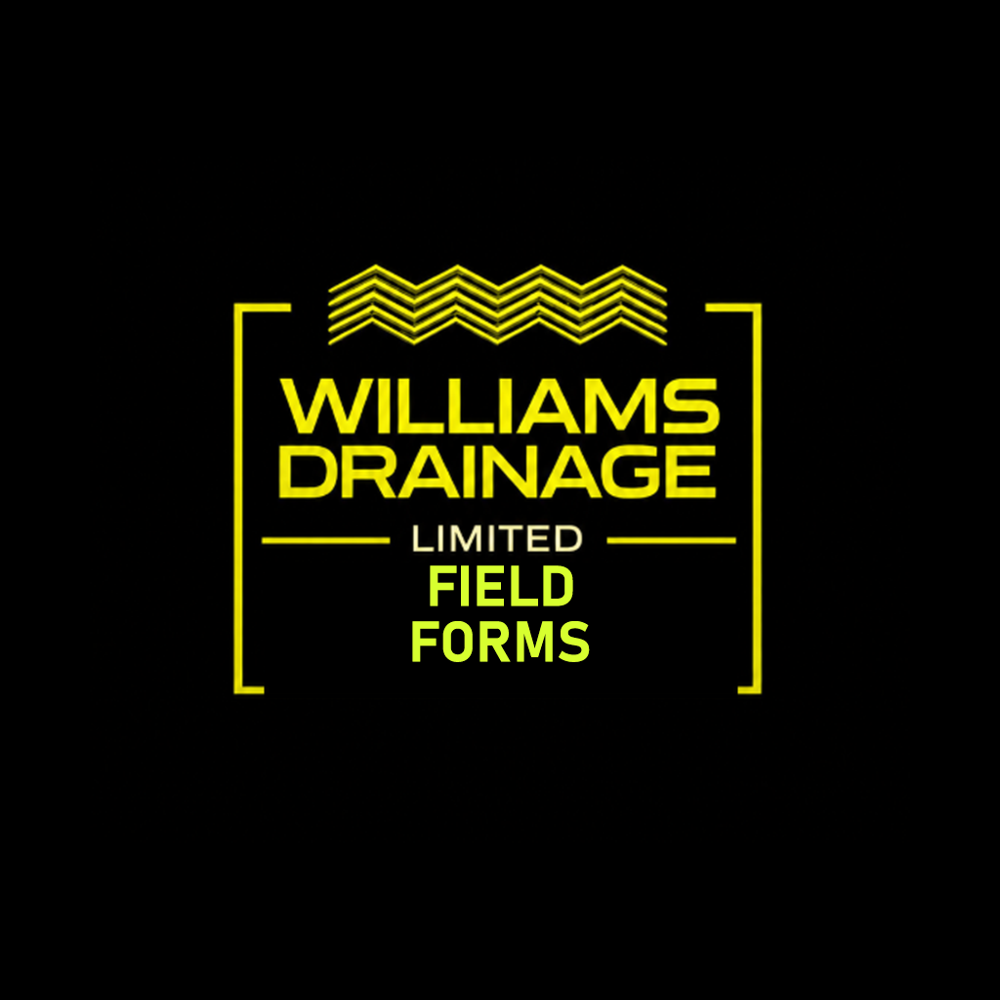
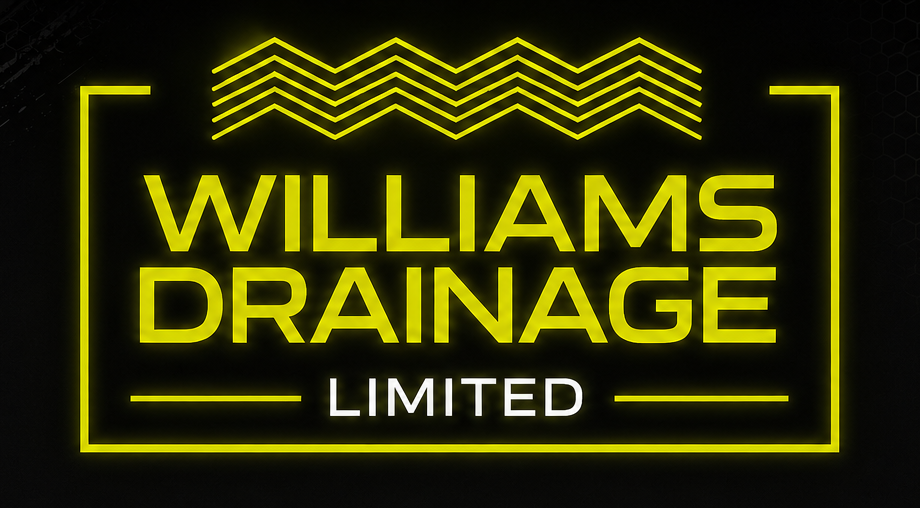
Field paperwork, sorted
WDL Field Forms
A field app and office dashboard built for clean records, fast forms, and less chasing paperwork.
Williams Drainage Limited
WDL Field Forms
A cleaner way to capture field paperwork, site sign-ons, job information, and drainage records.
Built for the work crews actually do each day.
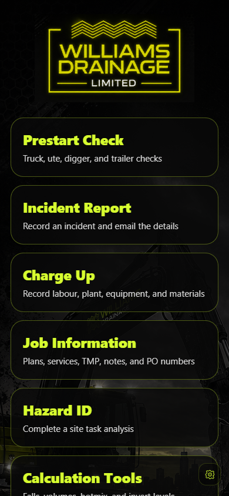
Main menu
One field app
One app replaces the paper trail
Crews open the form they need, complete it on site, and send a polished record back to the office.
- Prestarts, incidents, charge ups, Hazard IDs, job information, calculators, and as-builts.
- Big, simple buttons that make sense under site conditions.
- Reports arrive ready for filing without chasing loose photos or paper.
Clear options for the field team
Field capture
Forms are quick enough to get used
Prestarts and Hazard IDs are designed around mobile use: clear headings, large controls, saved weekly forms, and signatures on screen.
- Truck/Ute, Digger/Machinery, and Trailer prestart checklists.
- Weekly Hazard IDs that crews can open, update, and sign onto daily.
- Typed details stay readable for the office and for future reference.
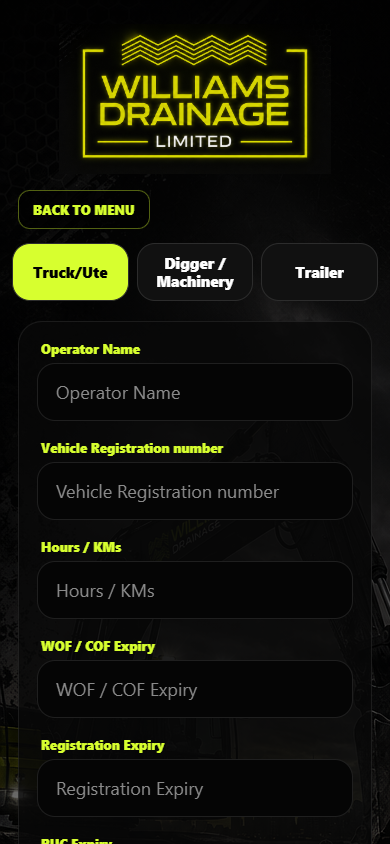
Prestart
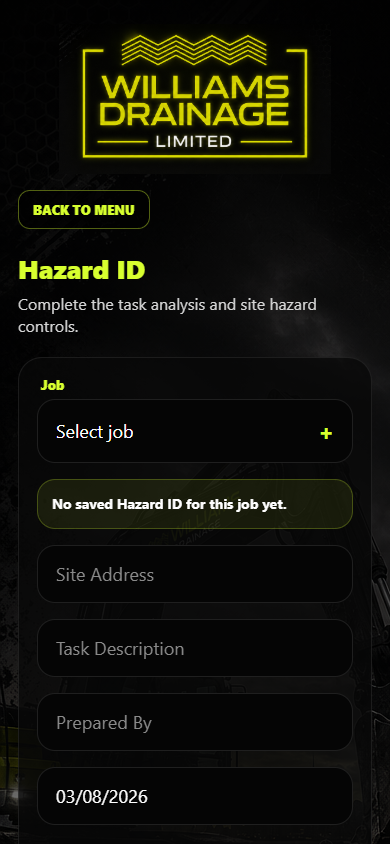
Hazard ID
Office control
Reports flow straight into office filing
The office dashboard completes the loop: jobs can be managed centrally, reports stay searchable, and site documents stay attached to the job.
Crew fills the form on phone or web.
Emails and report records are created.
Admin can search, download, print, archive, and manage jobs.
Plans, TMPs, service info, notes, and photos stay together.
Filed reports
Sample reports are ready for filing
Each submission turns into a clean record with the right heading, key details, notes, signatures, and attachments.
- Prestart reports show pass/fault results and vehicle details clearly.
- Hazard IDs show controls plus the people signed on for the day.
- Reports are shaped for office filing, printing, and PDF saving.
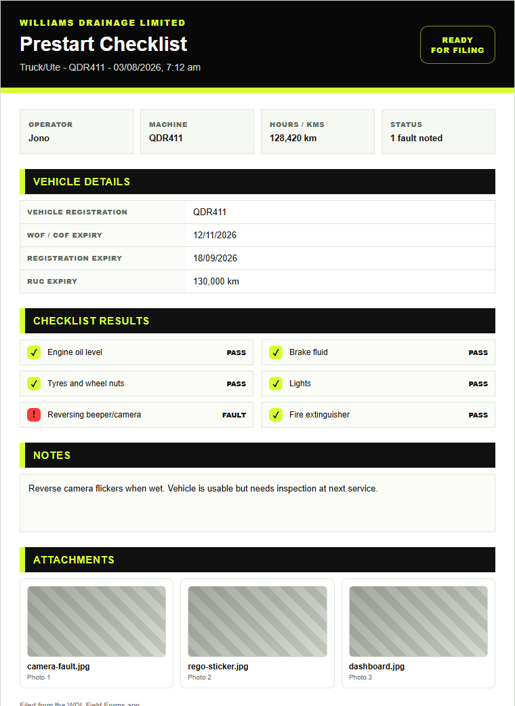
Prestart report
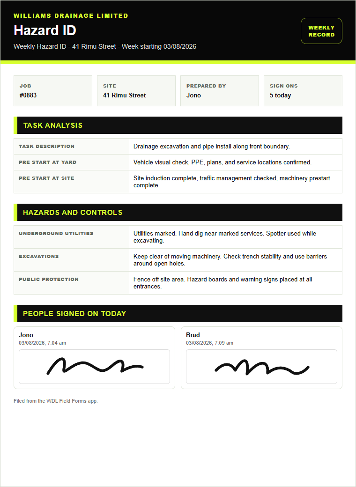
Hazard ID report
Professional records
Job records and plans look professional
Charge up work and as-builts are captured in the same system, so the office receives consistent records instead of loose notes.
- Charge ups break out labour, plant, equipment, materials, and notes.
- As-built reports include site details, signatures, and the drawing.
- The visual style stays consistent across every form type.
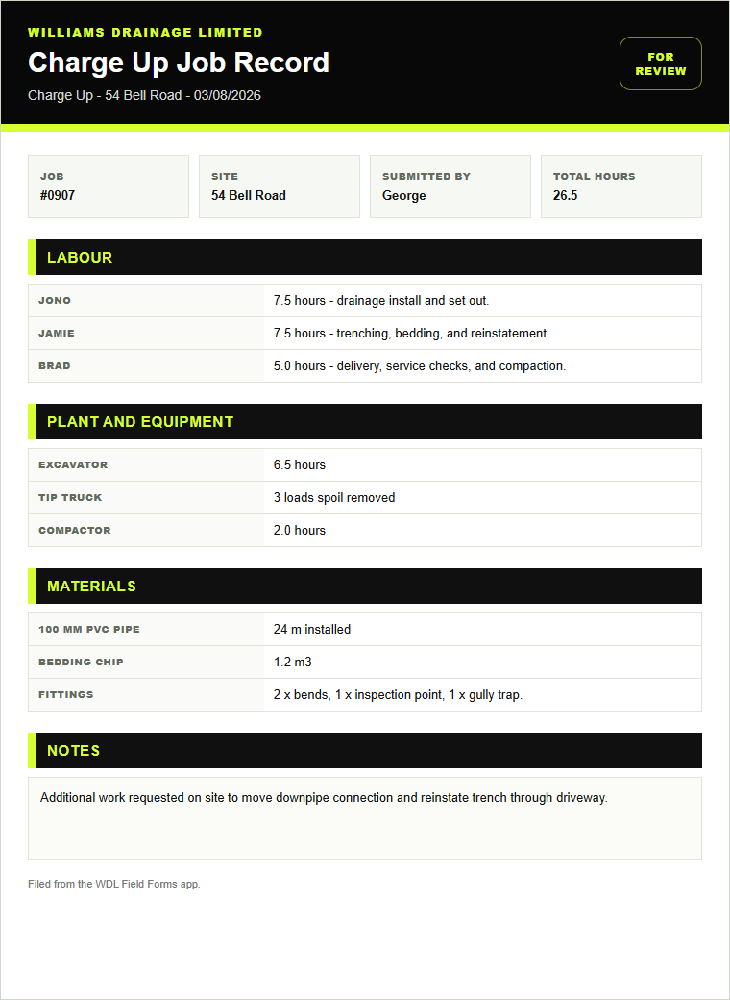
Charge Up report
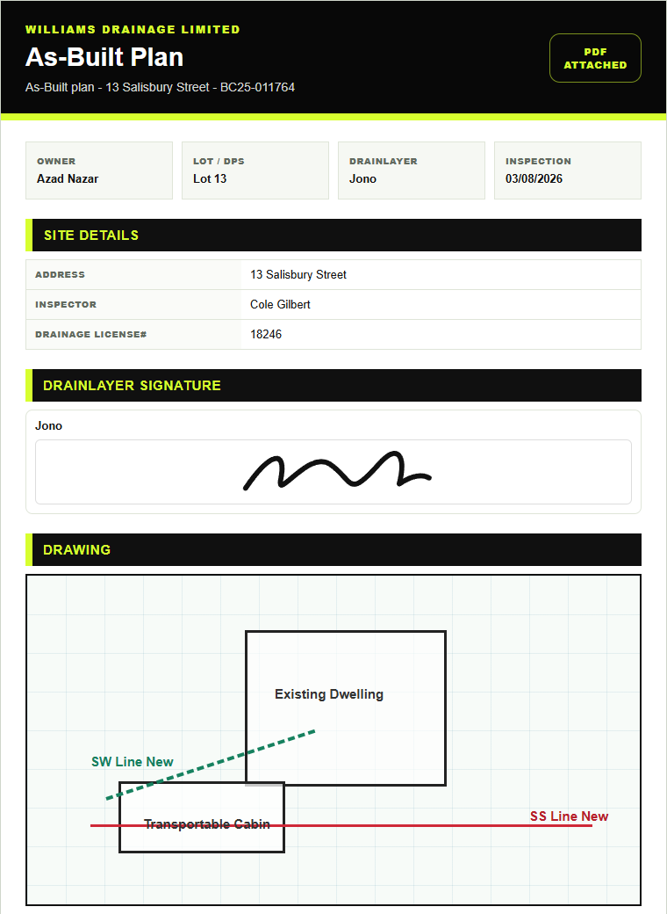
As-Built report
Admin dashboard
The office can see the whole picture
Submitted reports, open weekly Hazard IDs, charge ups, and as-builts are visible from one clean dashboard.
- Search, download, print, archive, or inspect filed reports.
- Open Hazard IDs stay visible until the week is finished.
- Photos and PDF records stay connected to the right submission.
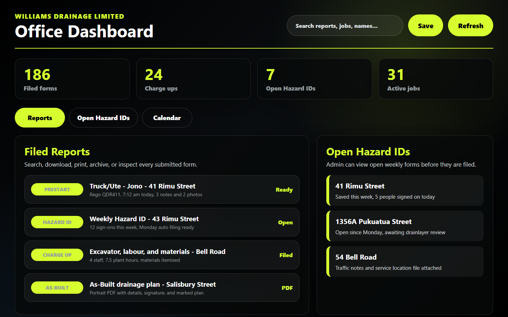
Reports and open Hazard IDs
Job information
Jobs and files stay easy to manage
Admin can add jobs, hide completed work from the field list, and keep job notes, plans, TMPs, contacts, and service information together.
- Drag-and-drop job files for office staff.
- Field crews see the job details they need without hunting around.
- Completed jobs can be kept for history without cluttering the app.
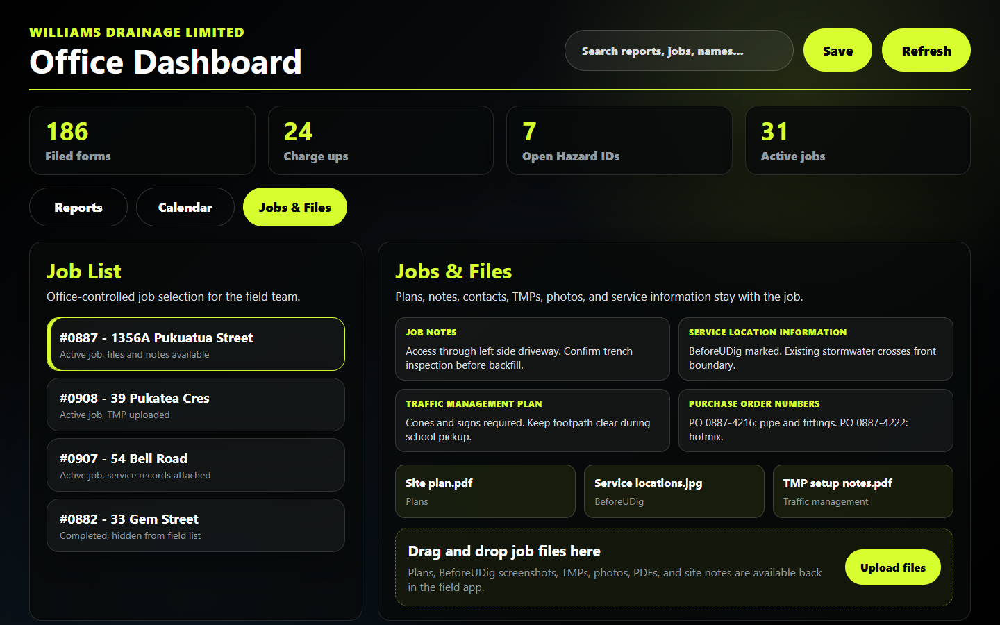
Jobs, files, notes, and uploads
Drainage tools
The handy site tools are in the same place
Calculation tools and as-built capture reduce back-and-forth in the field and give the office a better record at the end.
- Fall percentage, ratio, angle, invert drop, concrete volume, and hotmix quantity checks.
- As-built records with address, consent, inspector, drainlayer, signature, and drawing.
- Professional emails and report attachments for filing.
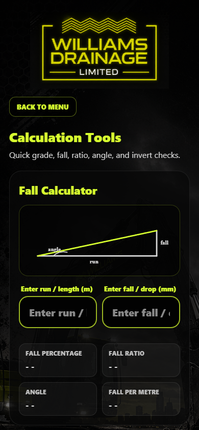
Calculators
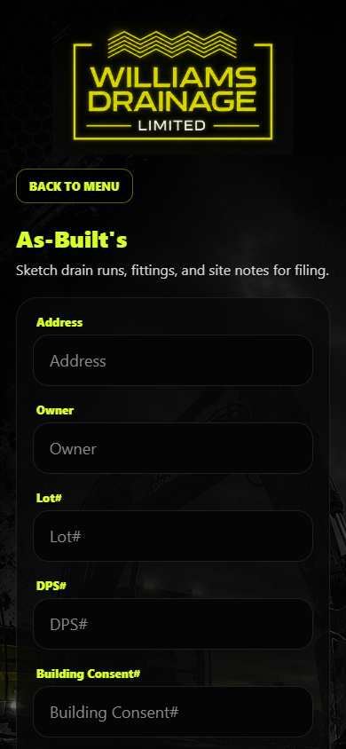
As-Built's
The point
Less chasing paperwork. Better records. A smoother day.
WDL Field Forms keeps the field team moving and gives the office the records it needs without turning every form into another admin job.
Fast, obvious screens with only the fields crews need.
Clean reports, photos, signatures, and job details in one place.
Jobs, files, emails, and settings can keep improving over time.
Ready for field use, office oversight, and steady improvement.